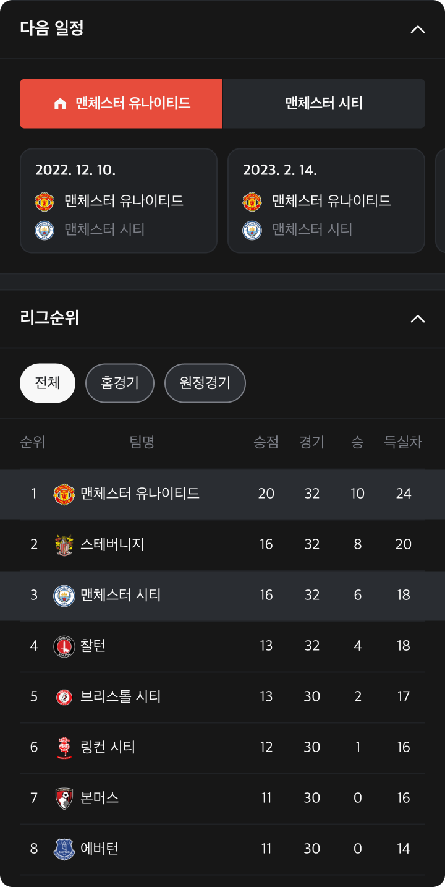
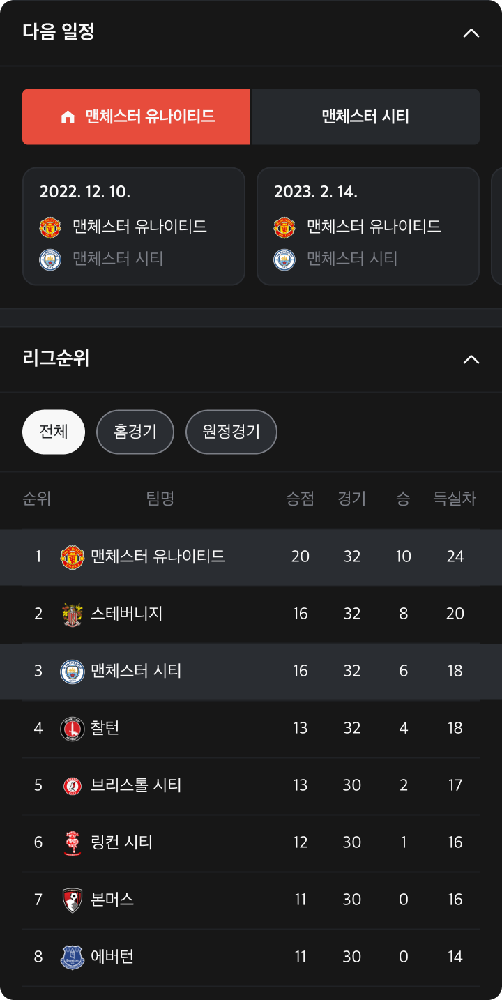

ChampScore
Intro
안녕하세요, UX/UI 디자이너 오인권입니다.
완성도 있는 프로덕트 ‘챔프스코어’를 위해 전체 리디자인 프로젝트를 진행했습니다.
회원가입부터 수천 개의 요소를 리디자인하였고, 기능과 페이지를 상당수 추가하였습니다.
그중 서비스의 중심이 되는 페이지를 선별하여 소개할 것을 말씀드립니다.
평범한 포트폴리오와는 조금 다른 구성으로 시작합니다.
단순히 디자인만 개선한 것이기 아니기 때문입니다. (의미심장)
Problem Summary
해결해야할 문제는 디자인만이 아니었다.
아니 이게 무슨 쌈장 콩 발라먹는 소리를 하는 겐가?
그렇다. 나도 몰랐다. 전혀 상상도 못했다.
디자인 개선 프로젝트를 입사 3일차에 바로 시작함과 동시에
눈앞에 펼쳐지는 것들은 실무 1년차였던 내게 혼돈 그 자체였기 때문이다.
이전 회사도 디자인 업무를 혼자서 다 했고, 이곳에서도 혼자서 다 해야했다.
그러나 그것은 문제가 되지 않았다. 사실 좀 그렇긴 했다.
진짜 문제는 그 근원 저 깊숙한 곳부터 시작되었기 때문이다.
‘하면 되지. 근데, 반드시 짚고 넘어가야할 부분이 있어.’
2022년 봄이 살며시 찾아 왔듯이
나도 살며시 주니어 디자이너의 패기로 문제점을 바로잡기 시작했다.
나는 슈퍼맨이 되어야 했다.
Problem solving based on the Double Diamond
01. Discover 문제발견
저 위에 있는 핵심요약 키워드를 기억한다면 단번에 무엇이 문제였는지 알 수 있다.
- 우선, 지난 1년 간 디자이너 없이 개발자가 프로덕트를 책임지는 기형의 프로젝트 형태였다.
- 그러므로 입사하여 디자인 업무를 인수인계 받는 것은 고사하고
- 프로덕트에 대한 그 어떤 기획문서는 깔끔하게 1%도 받을 수 없었다.
- 있으나 마나한 기존의 디자인은 10년 전에 일을 그만 둔 사람이 포토샵으로 그려서 대충 전달 했다고 하며
- 개발자는 커뮤니케이션이 무엇인지도 모른채 그림만 보고 감에 의존하여 개발구현을 했다고 한다.
- 덕분에(?) 사용자 경험과 사용자인터페이스는 산으로 가고, 정말 필요한 데이터는 애초에 고려 되지도 않았다.
- 결국 업무프로세스가 있을리 만무하고 업무프레임 툴 사용은 이미 지구 뒤편으로 자취를 감춰버렸다고 한다.
02. Define문제정의
문제를 발견하고나니 단전에서 끓어오르는 불편함과 이를 해결하고자 하는 욕망, 그리고 그런 업무환경에서 어떻게든 일하고 있는 동료들이 안타까웠다. 그래서 문제를 정의해보았다.
<10부재>
- 디자인 전문인력의 부재
- 워크프레임의 부재
- 워크프로세스의 부재
- 커뮤니케이션의 부재
- 디자인 협업툴의 부재
- 디자인시스템의 부재
- 스타일가이드의 부재
- UX/UI룰 고려한 디자인의 부재
- 기획문서의 부재
- 필요한 데이터의 부재
03. Develop해결방안
위에서 정의한 10부재를 해결하기 위한 방안을 빠르게 강구해야만 했다.
-
디자인 전문인력의 부재
디자이너(본인)의 성장을 통한 역량강화로 해결한다.
-
워크프레임의 부재
노션의 활용을 제안하고, 참여하는 모든 회의의 회의록 작성을 디자이너가 맡아 워크프레임의 필요성을 독려하며 해결한다. 또한 자발적으로 일간, 주간, 월간 업무일지를 작성하며 솔선수범한다.
-
워크프로세스의 부재
‘기획 ⇢ 디자인 ⇢ 개발'이라는 프로세스의 기초부터 도입하여 해결한다.
-
커뮤니케이션의 부재
‘기획 ⇢ 디자인 ⇢ 개발' 프로세스의 중간역할을 하는 디자이너가 회의와 협업교육을 통해 해결한다.
-
디자인 협업툴의 부재
협업 툴중 피그마를 주력으로 삼고, 툴 마스터가 되어 협업교육을 통해 해결한다.
-
디자인시스템의 부재
디자인 개선프로젝트를 진행함과 동시에 컴포넌트 셋(라이브러리)를 제작해나가며 해결한다.
-
스타일가이드의 부재
디자인 개선프로젝트를 진행함과 동시에 스타일(텍스트, 컬러, 이펙트)을 제작해나가며 해결한다.
-
UX/UI룰 고려한 디자인의 부재
디자인 개선프로젝트를 진행함과 동시에 회의와 디자이너의 역량으로 해결한다.
-
기획문서의 부재
디자인 개선프로젝트를 진행함과 동시에 기획회의와 커뮤니케이션으로 해결한다.
-
필요한 데이터의 부재
디자인 개선프로젝트를 진행함과 동시에 기획자, 백엔드개발자와 회의로 해결한다.
04. Deliver실행
그래, 쉽지 않을 거란 생각이 들지만 어떻게든 해낼 것이라는 확신은 있었다.
위에서 해결방안으로 생각한 모든 것을 그대로 실행하였고, 시행착오는 분명 있었지만 좀 많이 힘들었지만
결국은 “어떻게든 해냈다.”
What's ChampScore?
역사상 가장 빠르고 정확한 스포츠 라이브스코어
챔프스코어는 230개가 넘는 국가의 모든 종목, 20,400건이 넘는 팀라이브스코어를 제공합니다.
실시간 경기상황은 박스스코어로, 실시간 상황중계는 그래픽 중계로, 유저가 선택한 경기의 전력은 전력분석으로 확인할 수 있으며 더 자세한 경기상황은 중계 히스토리를 통해 알 수 있고, 경기에 참여한 선수는 라인업에서 확인할 수 있다는 강력한 핵심가치를 유저에게 전달하고 있습니다.
또한 웹브라우저를 통해 어플리케이션 없이도 모든 서비스를 이용할 수 있으며, 어플리케이션은 Android 네이티브앱으로써 최적화된 사용자 경험을 경험할 수 있습니다. 이것에 더하여 웹기반의 하이브리드 iOS앱을 통해 운영체제와 관계 없이 일관된 디자인을 경험할 수 있다는 특징을 지녔습니다.
01 Statistics Analysis
 

전력분석 가용데이터의 인포그래픽화, 최적의 UX/UI 제공
틀만 간신히 잡혀 있는 기존의 디자인에서 벗어나기 위하여 필요한 데이터를 전수조사하여 수집한 후, 그것을 어떻게 보여줄 것인지에 대한 고민을 통해 효과적으로 유저에게 정보를 전달할 수 있는 방법을 찾는 데에 목표를 두고 리디자인을 진행하였습니다. 또한 기획 정책을 수립하는 과정에도 참여하여 보다 나은 UX를 위한 타협또한 마다하지 않았습니다.
또한 자세한 설명 없이도 유저들이 보는 즉시 사용가능하도록 하면서도 많은 정보 안에서 필요한 정보만을 쉽게 인지할 수 있어야 한다는 기본 UX원칙을 고수하였습니다. ‘비교, 흐름, 상태, 정보’라는 네 갈래의 대분류를 통해 정보의 특성과 부합하는 인포그래픽 제작에 비중을 두었습니다. 각 그래프는 페이지 최초이동시 동적으로 게이지가 차듯 애니메이션을 적용하였습니다. 사용자가 원하는 정보가 가득하고, 눈이 즐겁고 사용하기 수월하다면 얼마나 좋을까 하는 생각을 항상 가지며 디자인 하였습니다.
02 Broadcasting History
 Basketball
Basketball
중계 히스토리 가용데이터와 종목에 따른 최적의 UX/UI 제공
기존에 사용되지 않은 가용데이터 유무를 파악하고, 데이터를 수집하면서 어떤 것이 사용자의 니즈에 부합하는 정보인지 판단하는 과정이 선행되었습니다. 이를 통하여 사용자에게 유의미한 데이터만을 선별하여 이를 효과적으로 나타내기 위한 방법이 무엇일지 동종유사 서비스, 국내외 유관 컨셉 디자인을 분석했습니다. 각 종목의 특성에 맞는 UI를 구성하기 위한 과정을 거치면서 점차 자리를 잡아갔습니다.
이또한 전력분석과 마찬가지로 ‘비교, 흐름, 상태, 정보’라는 네 갈래의 대분류를 통해 정보의 특성과 부합하는 인터페이스에 비중을 두었습니다. 이 프로덕트의 전반적인 핵심 가치에 맞는 UI를 제공하기 위해서 각 종목에 네 가지의 대분류를 대입하면 다시 여러 가지의 경우의 수가 나오게 됩니다. 따라서 아주 정확하고 세밀한 UI를 경우의 수에 따라 모두 제작하여 빠짐 없이 개발전달을 완료해야하는 과정이 무척 중요했습니다. 전체 리디자인 중 가장 많은 경우의 수를 자랑하는 작업이었습니다.
더불어 UX의 기본적인 준수 사항인 사용성과 더불어 편의성, 편리성, 유용성, 효율성, 안정성, 학습용이성 등을 기저에 바탕을 두고 인터페이스에 대한 심도 있는 고민을 이어나갔습니다.
03 Lineups
 Football
Football
라인업 가용데이터와 종목에 따른 최적의 UI 제공
기존에 기획조차 되지 못했던 가용데이터 유무를 파악하고, 데이터를 수집하면서 어떤 것이 실제로 원활히 사용가능한 데이터인지 재분류 하는 과정이 선행되었습니다. 이를 통하여 서비스 제공자가 원활히 제공할 수 있는 점에서 안정성을 확보하고, 사용자에게 유의미한 데이터임을 증명하기 위하여 동종유사 서비스, 국내외 유관 컨셉 디자인을 분석했습니다.
각 종목의 특성에 맞는 UI를 구성하기 위한 과정을 거치면서 점차 자리를 잡아갔습니다. 이또한 전력분석, 중계 히스토리와 마찬가지로 ‘비교, 흐름, 상태, 정보’라는 네 갈래의 대분류를 통해 정보의 특성과 부합하는 인터페이스에 비중을 두었습니다. 경기가 시작되기 전에 대기화면부터 경기가 끝날 때까지의 변화를 담기 위해서 필요한 정보에 맞는 인터페이스를 제공하기 위해 많은 고민이 필요했습니다. 특히 축구의 경우, 포메이션이 총 19종이 나왔으며 이를 모두 정확하게 개발전달하는 협업상황에 심혈을 기울였습니다.
04 Home
홈 종목에 따른 최적의 UI, 그리고 정리를 통한 UX개선
각 종목의 특성에 맞는 UI를 구성하기 위한 과정을 거치면서 ‘비교, 흐름, 상태, 정보’라는 네 갈래의 대분류를 통한 정리를 도모했습니다. 유일하게 비교적 인터페이스의 정리를 목표로한 비중이 높았으며 기존의 UI에서 배치의 변화, 호버기능을 사용하지 못할 모바일 사용자를 위한 바텀 내비게이션과 최상단 종목섹션 두가지에 대해 텍스트와 함께 구성하였습니다. 이로인해 사용성 개선이 이루어졌습니다.
빠른 라이브 경기 탐색을 위한 버튼, 원하는 날짜의 경기정보를 찾아볼 수 있도록 시원하게 중앙배치한 달력 영역, 그 좌우로 하루씩 이동할 수 있는 쉐브론 버튼, 경기와 리그를 구분짓는 즐겨찾기 색상의 차이, 애니메이션으로 움직이는 각종 경기상황 등의 디테일적인 부분에도 많은 비중을 두었습니다.
또한 종료된 경기의 정보를 얻고자 하는 유저의 니즈에 부합하도록 종료된 경기를 펼치고 접으며 확인할 수 있는 기능또한 추가하였습니다. 여기서 UX기본원칙 중 가끔 등장하는 ‘재미'의 요소를 조금이라도 싣기 위하여 동적인 요소를 신경썼습니다. 화면에 보이는 CHANCE, 롤 경기의 칼모양 일러스트, 야구게임의 현재상태 등은 모두 동적인 애니메이션 요소입니다.
05 Box Score

박스 스코어 종목에 따른 최적의 UI, 그리고 사용성
각 종목의 특성에 맞는 UI를 구성하기 위한 과정을 거치면서 ‘비교, 흐름, 상태, 정보’라는 네 갈래의 대분류를 통한 정리를 도모했습니다.
이제 이 말은 그만해도 될 듯합니다. 모든 리디자인의 기본원칙 중 한 가지가 되어버린 사항이며 매우 중요한 준거로 작용할 수 있다는 점을 시사하고 있습니다.
박스스코어는 홈에서 경기로 진입하면 나오는 응원채팅방 상단에 위치한 디폴트 UI입니다. 사용자간 대화와 포인트 획득을 즐기며 박스스코어를 시각적으로 확인할 수 있다는 점이 특장점입니다.
상단의 섹션을 통해 각종 정보를 페이지 완전이탈 없이 할 수 있다는 점이 매우 효율적입니다. 추가된 기능으로는 채팅입력창 좌측에 보이는 포인트는 응원채팅방에서 자신이 돋보일 수 있도록 여러 시각적 아이템을 구매할 수 있으며, 이는 스토어 페이지에서 가능합니다.
Dark mode & Light mode

다크모드 & 라이트모드 UX/UI디자이너 역량의 끝, 테마설정
“테마색상 정하는 게 역량이야? 그냥 반전시킨 거잖아”라고 말한다면 단 한번도 이 작업을 해보지 않은 실무자일 가능성이 클 것이라고 생각합니다.
모든 시안에 정확한 값과 디테일의 끝을 달리며 개발전달을 위해 정확도 100%에 달하는 문서작성의 끝을 경험할 수 있는 최고난도 작업 중 한 가지라고 생각합니다. 특히나 서비스 안에 지정된 컬러를 많이 사용하고 이미지의 사용이 극히 제한 되었다면 말입니다.
이 작업이 가능하려면, 툴의 ‘일괄' 기능에 대한 숙련도와 ‘섬세함', ‘기억력', ‘개발전달을 위한 정보정리능력', ‘스타일가이드_컬러에 대한 이해', ‘전달이후 개발자와의 협업'에 능통해야했습니다. 수백 개의 페이별 시안, 수천 개의 컴포넌트 등에 대한 이 작업을 프론트엔드, 앱개발자 5명과 커뮤니케이션을 이어가며 무사히 구현하였습니다.
물론, 어떤 완성도를 가져가느냐에 따라 이 작업이 그다지 어렵지 않을 수도 있습니다. 다만 책임감이 강한 디자이너라면 상당히 고통스러운 작업일 것입니다. 물론 본인는 후자에 해당하며 심지어 혼자서 그것을 다 하려다보니 매우 고통스러웠지만 행복했습니다.
Solution Summary
비하인드 스토리
생각해보면 전체 서비스를 혼자서 리디자인 한다는 것은 참으로 경이로운 작업이었다.
- 회원가입
- 이메일 입력. 비밀번호 입력
- 모바일 인증, 이메일 인증
- 약관동의
- 이 모든 것에 따른 유효성검증
- ... 생략
- 로그인
- 이메일 입력, 비밀번호 입력
- 이 모든 것에 따른 유효성검증
- 아이디 찾기
- 모바일번호 변경
- 기존 인증자가 아닌경우, 맞는 경우
- 이미 이메일 인증을 한 경우, 아닌 경우
- ....생략
- 이메일 입력, 비밀번호 입력
- 프로필
- 프로필 수정
- 닉네임 변경
- 프로필 사진 변경
- 상태메세지 변경
- 이 모든 것에 따른 유효성검증
- ...생략
- 타회원
- 팔로우, 팔로우 취소
- 차단, 차단해제
- ...생략
- 정책 약관, 공지사항, 커뮤니티
- 게시판
- 카테고리, 제목, 본문, 이미지 첨부
- 각 항목에 대한 제한과 정책
- ...생략
- 게시판
- 스토어
- 포인트 획득, 소모처
- 아이템별 사용 기한 및 상태확인
- ...생략
- 포인트 획득, 소모처
- 즐겨찾기
- 경기등록
- 리그등록
- 일괄제어
- 삭제
- 달력에 따른 정책
- ...생략
+ 스토어 스크린샷, 앱아이콘 등.....
미쳐서 작업을 했던 기억 뿐이다. 퇴근할 때 넋이 빠져나가기를 수차례 반복했다. 물론 힘들지 않았다면 거짓말이다.
하지만, 무척이나 뜻깊고 뿌듯하다. 그리고 해결해야할 문제는 여전히 보이고 또 보인다.
가끔은 내가 의사라도 된 양 UX/UI에 대한 진단을 하곤 한다. 이러한 것이 이 포지션의 매력이 아닐까 싶다.